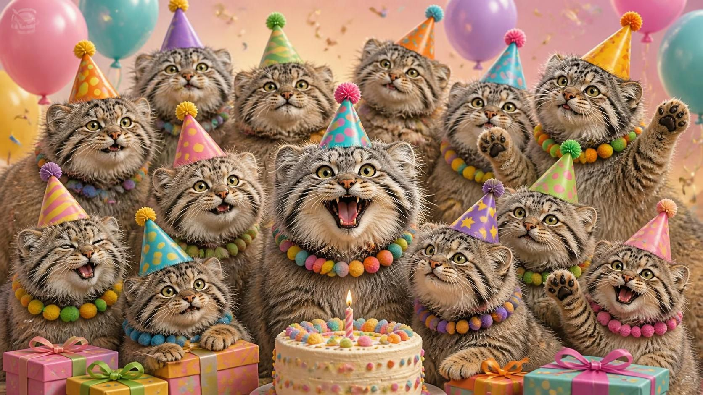
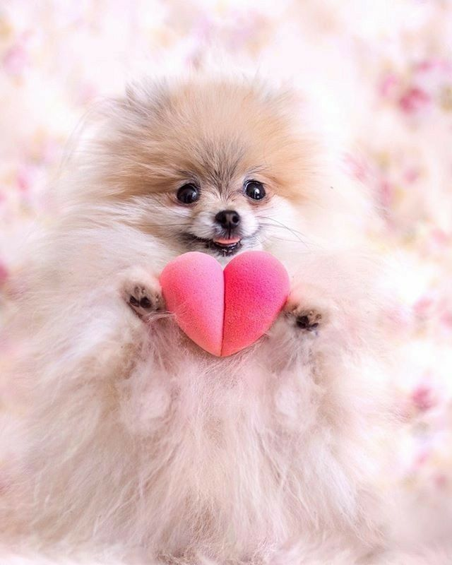
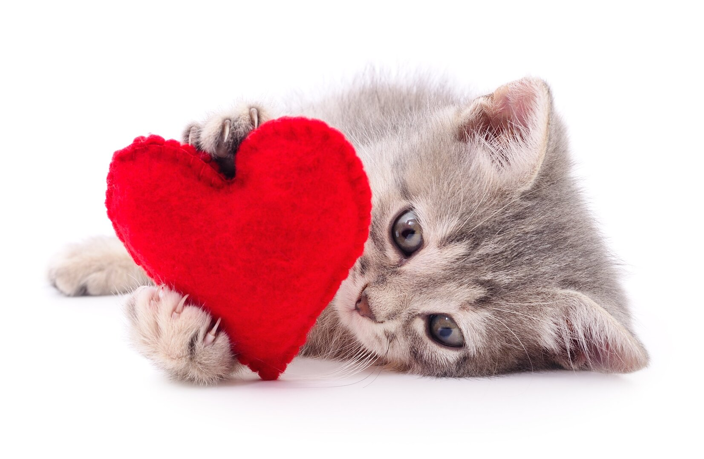
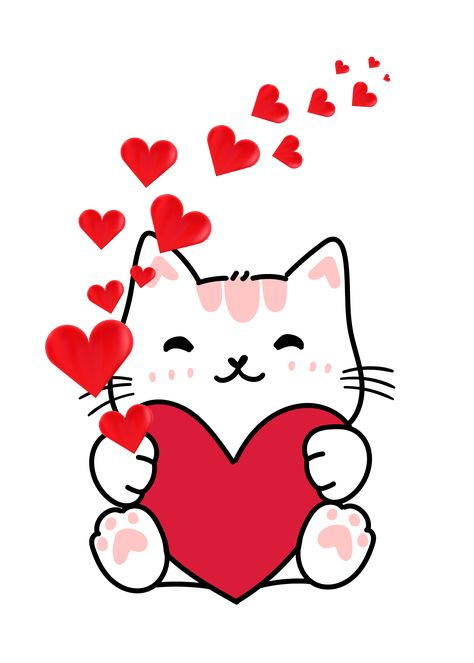

солнышко моё, в этот чудесный день, когда миру подарена ты, я хочу тебе сказать, что ты - мой самый красивый и желанный сон, который воплотился в реальность. когда ты рядом, мне больше ничего не нужно: одна ты делаешь меня безумно счастливым просто своим присутствием. как звёзды украшают ночное небо, так и ты украшаешь мою жизнь своей великолепной красотой, теплом и любовью <3

я тебе желаю, чтобы в твоей жизни сбывались все твои мечты и желания, чтобы каждый момент твоего дня был наполнен теплом и улыбками. пусть у тебя будет столько счастья, сколько звёзд на небе, столько любви, сколько может вместить твоё прекрасное доброе сердце. пусть каждый день дарит тебе новые радости, а каждый вечер - возможность вспомнить самые хорошие моменты.

спасибо тебе за то, что ты существуешь, за твою улыбку, за твою прелестную красоту. ты, правда, самая лучшая девочка на всём этом белом свете, я тебя безумно люблю, и моя любовь к тебе растёт с каждым днём всё больше и больше. я обещаю быть рядом с тобой, чтобы разделить все твои радости и поддержать, когда нужно. ты - моя вечная любовь, которую я очень боюсь потерять и с которой я хочу прожить всю свою оставшуюся жизнь. уже прошёл год с того момента, как мы начали общаться, и я по сей день остаюсь самым счастливым человеком, оттого что познакомился именно с такой красавицей, как ты, и что полюбил именно тебя! спасибо тебе за всё, любимая <33
с днём рождения, зайка моя! пусть этот год принесёт нам ещё больше радостных моментов, ещё больше причин верить в нашу любовь, и пусть мы вместе будем счастливы каждый день!
